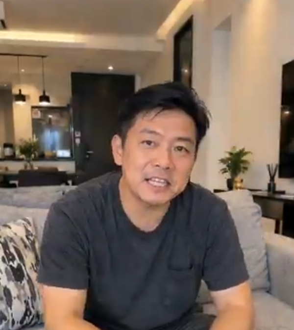
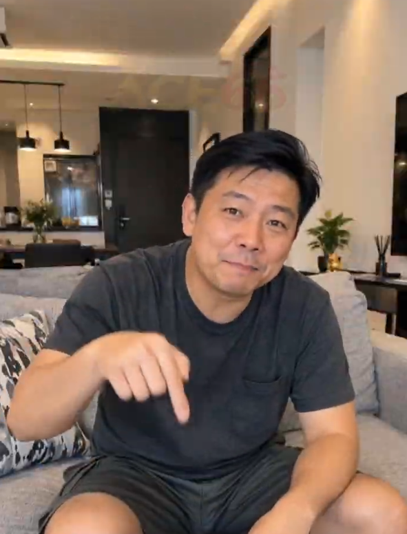

打造温暖舒适居家空间：从生活细节中寻找归属感与满满幸福感

家不仅是一个避风的港湾，更是一个充满爱与放松的温馨天地。忙碌了一天之后，回到布置得干干净净、光线柔和的客厅，坐在舒适柔软的沙发上，总能让人瞬间卸下一整天的疲惫。
阿伟坐在自家的客厅里，脸上洋溢着轻松愉悦的笑容。对于他来说，注重居家的品质与细节，是提升生活幸福感最直接、最有效的方式。
1. 打造温馨客厅的三个舒心秘诀
想要让客厅变得更加惬意舒适，并不需要繁复的装修，几个简单小巧的改变就能让空间焕然一新：
柔和温馨的灯光： 采用暖色调的无主灯设计或落地灯，不仅能减少视觉疲劳，还能为整个房间增添一抹温馨的光晕。
选对舒适的家具： 一张包裹感十足的质感沙发与亲肤抱枕，是放松身心、沉浸于阅读或观影的绝佳搭档。
绿植与自然的点缀： 在角落摆放几盆生机勃勃的室内绿植，能给室内带来清新的自然气息与源源不断的活力。

2. 用心感受当下，传递真诚与温暖
阿伟热情地向镜头伸出手势，亲切地分享着自己的心得：“把家里收拾得井井有条，把脚下的每一步走得扎实，心自然就会变得格外从容和踏实。”
在惬意的家居环境中，无论是和家人一起聊聊日常琐事，还是独自一人享受一杯香浓的咖啡，这些看似平常的微小瞬间，都汇聚成了生活里最珍贵的滋味。
“家的温度，不在于它的空间有多大，而在于里面装满了多少欢声笑语与真诚的陪伴。”
阿伟那真诚的笑容与乐观的态度，感染着周围的每一个人，也让大家体会到：只要用心经营生活，平凡的每一天都能闪闪发光。
总结
舒适温馨的家居环境，能为我们的心灵注入无尽的正能量。让我们从用心布置自己的小天地开始，珍惜身边的每一份陪伴，用积极温暖的心态拥抱美好的生活。
本故事分享居家生活美学、温馨家庭氛围与积极乐观的生活方式理念。